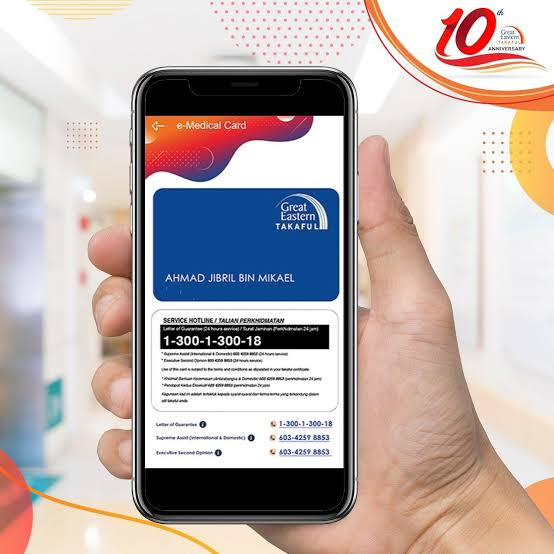
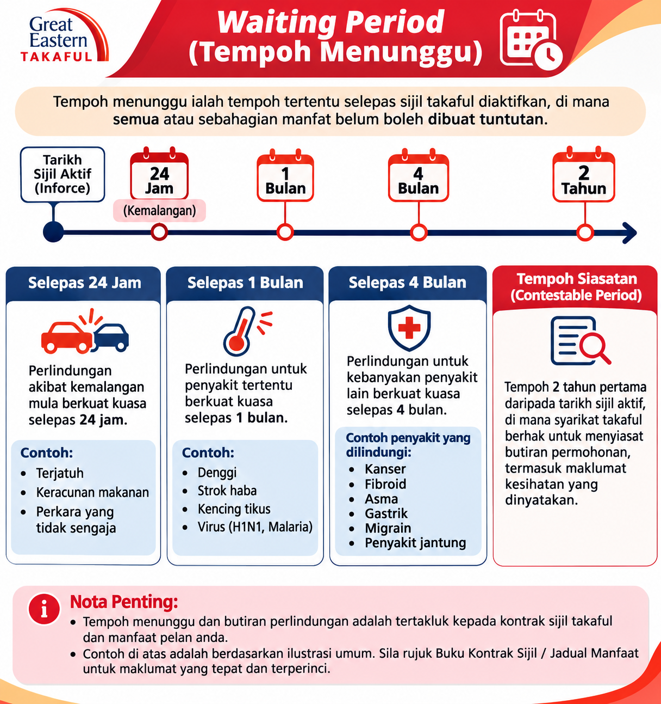

Quick Guide
For My Takaful Client
Gunakan panduan ini untuk mengakses kad perubatan elektronik, mendaftar portal pelanggan, memahami tempoh menunggu dan pengecualian, serta mengetahui langkah asas membuat tuntutan.
Disediakan oleh Rohaiza Abdul AzizCara install aplikasi GETCare

Contoh paparan e-Medical Card dalam aplikasi GETCare.
Jika sijil anda mempunyai manfaat perubatan, anda boleh menggunakan GETCare untuk melihat e-Medical Card.
📱 Muat turun dan mula gunakan GETCare
Password: Masukkan 4 digit terakhir nombor kad pengenalan.
Cara daftar i-Get In Touch
Daftarkan akaun portal ini untuk menyemak maklumat sijil dan mengakses perkhidmatan dalam talian Great Eastern Takaful.
🔐 Langkah pendaftaran i-Get In Touch
Jika anda sudah mempunyai akaun
Pilih “Login”, masukkan maklumat akaun berdaftar dan ikut arahan pada skrin. Jika terlupa kata laluan, gunakan pilihan pemulihan kata laluan yang disediakan.
Waiting Period (Tempoh Menunggu)
Tempoh menunggu ialah tempoh selepas tarikh kuat kuasa sijil atau manfaat, apabila tuntutan bagi keadaan tertentu mungkin belum layak dibayar.
Ringkasan berdasarkan infografik rujukan

Infografik ringkasan tempoh menunggu. Rujuk kontrak sijil dan manfaat pelan untuk tempoh sebenar.
Sebagai gambaran umum, infografik di bawah menunjukkan contoh susunan tempoh seperti berikut:
Apakah maksud tempoh contestability 2 tahun?
Infografik turut menyebut tempoh 2 tahun. Ini bukan tempoh menunggu umum untuk semua penyakit. Ia merujuk kepada tempoh semakan atau siasatan tertentu berkaitan maklumat yang diberikan semasa permohonan, tertakluk kepada undang-undang dan terma sijil. Ia tidak bermaksud semua tuntutan dalam dua tahun pertama akan ditolak atau disiasat secara automatik.
Exclusions (Pengecualian)
Pengecualian ialah keadaan, penyakit, rawatan atau situasi tertentu yang tidak dilindungi di bawah sijil.
Perkara yang perlu anda semak
- Baca senarai pengecualian khusus dalam kontrak sijil anda.
- Pastikan sejarah kesihatan dan semua maklumat diisytiharkan dengan lengkap serta tepat semasa permohonan.
- Rawatan atau keadaan yang tidak memenuhi definisi manfaat atau syarat tuntutan dalam sijil anda.
- Syarat berkaitan penyakit sedia ada, jika berkenaan, hendaklah dirujuk pada keputusan pengunderaitan dan kontrak sijil.
Proses Claim (Tuntutan)
Ikuti langkah asas ini apabila anda mendapatkan rawatan atau ingin membuat tuntutan manfaat.
🏥 Kemasukan hospital / medical card
Tuntutan bayaran balik / manfaat lain
- Semak jenis tuntutan dan dapatkan borang terkini melalui saluran rasmi.
- Sediakan borang tuntutan, salinan dokumen pengenalan, laporan doktor, bil terperinci, resit asal dan dokumen sokongan yang diminta mengikut jenis tuntutan anda.
- Hantar dokumen tuntutan melalui saluran yang ditetapkan dan simpan bukti penghantaran.
- Semak status tuntutan anda melalui i-Get In Touch atau saluran khidmat pelanggan.
Makluman Bayaran & Pertukaran Kad
Pastikan maklumat pembayaran anda sentiasa terkini supaya potongan caruman dapat diproses.
💳 Jika kad debit/kredit ditukar atau tamat tempoh
Perlukan bantuan?
Great Eastern Takaful Customer Careline: 1 300 13 8338
E-mel: i-greatcare@greateasterntakaful.com
Panduan ini disediakan sebagai rujukan umum untuk anda. Manfaat, tempoh menunggu, pengecualian, kelayakan tuntutan dan kaedah bayaran adalah tertakluk kepada kontrak sijil anda serta pengesahan rasmi Great Eastern Takaful.
Disediakan oleh: Rohaiza Abdul Aziz